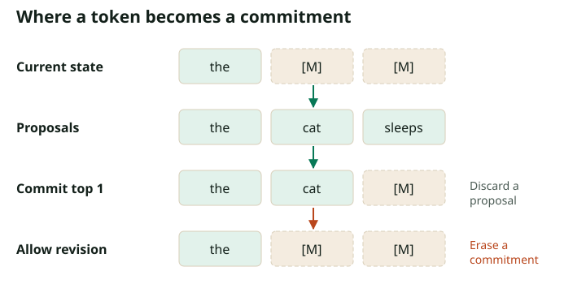

Sampling: Parallel Reveals, Confidence, and Remasking
Start with the reverse kernel we derived
Take a decreasing grid $1=t_K>t_{K-1}>\cdots>t_0=0$. Under the linear masking path, a current mask is revealed with probability $(t_k-t_{k-1})/t_k$. If selected, its token is sampled from $\mu_\theta^i(\cdot\mid x_{t_k})$. Visible tokens are copied.
- Initialize the editable positions to masks; copy any fixed context.
- Run the denoiser once on the current complete sequence.
- Independently select each mask for reveal with probability $(t_k-t_{k-1})/t_k$.
- Draw selected token values from their predicted categorical distributions.
- Commit the selected values simultaneously, then move to $t_{k-1}$.
At the last interval the reveal probability is one, so every remaining mask disappears. This guarantees termination, not exact joint sampling. In this implementation, predictions for all selected positions use the context from before any of those positions changed.
Quantify the error with an exact denoiser
Use the two-color corpus: half red red, half blue blue. There is no learning error. If two positions reveal in different intervals, the second sees the first and must match it. If they reveal in the same interval, their independent draws disagree with probability $1/2$.
On a uniform $K$-interval grid, each position's reveal interval is uniform on the $K$ intervals. The probability that the two intervals coincide is $K(1/K)^2=1/K$. Therefore
At $K=1$, half the strings are invalid. At $K=8$, the invalid fraction is $6.25\%$. At $K=32$, it is $1.5625\%$. These are exact probabilities for this toy process, not benchmark results for an LLM. An exact sequential reveal sampler instead draws one token, recomputes the posterior, and draws the other: its invalid fraction is zero.
With 4 intervals, the exact invalid-output probability is 12.5%.
For unequal intervals, let $w_k=t_k-t_{k-1}$. A position reveals in interval $k$ with probability $w_k$, so the mixed-color probability is $\frac12\sum_k w_k^2$. In this particular toy case, equal intervals minimize the error for fixed $K$. That result does not imply that uniform schedules are optimal for real text, where posterior difficulty varies with context and time.
What “exact reverse process” actually means
The one-coordinate posterior in Part 2 is exact when the clean endpoint is known. After marginalizing the endpoint, each coordinate posterior can still be computed exactly, but their product need not equal the joint posterior for a finite interval. The clean endpoints couple the masked coordinates.
In a continuous-time process with single-coordinate jumps, the probability of two jumps in an infinitesimal interval is higher order, and the learned one-coordinate posteriors can parameterize the correct rates. A finite parallel update neglects interactions that would have been observed between those jumps. This is a discretization issue; simply making the network larger cannot eliminate it.
Confidence decoding answers a different scheduling question
Instead of selecting positions with independent Bernoulli draws, a decoder can set a target mask count and keep the most confident proposals. A common pattern predicts all current masks, scores each proposed token, commits the top $k$, and leaves the rest masked. This gives predictable progress per step.
# Illustrative confidence decoder; not the exact reverse kernel.
for remaining_target in mask_count_schedule:
positions = currently_masked(x)
probs = softmax(model(x) / temperature)
proposals = sample_categorical(probs[positions])
confidence = probs[positions, proposals]
k = len(positions) - remaining_target
chosen = top_k_positions(confidence, k)
x[positions[chosen]] = proposals[chosen]The probability of the proposed token and the maximum probability in its row are different scores when proposals are sampled. An entropy score is different again. Report the actual score and tie-breaking rule. Low entropy means the model is certain; it does not mean the model is correct.
MaskGIT introduced confidence-based iterative masked decoding for image tokens. The LLaDA generation implementation is a concrete language example: it separates token proposals, confidence scores, and the number of tokens to transfer. Such selection changes the sampling policy from the independent reverse-kernel rule.
Two meanings of remasking
| Operation | What changes? | Can it repair a committed error? |
|---|---|---|
| Discard low-confidence proposals | Some current masks remain masks | No, previously committed tokens stay fixed |
| Re-mask previously committed tokens | Visible generated tokens become editable again | Potentially, after another prediction |
The first is sometimes described as “predict then remask,” even though the persistent state never committed the discarded proposals. The second genuinely revisits earlier decisions and is not a trajectory of the monotone absorbing reverse process. It needs a separately specified correction policy. Repeatedly erasing uncertain tokens may help, but can also oscillate, erase good context, or produce a train–inference mismatch.

Temperature changes values; the schedule changes positions
For logits $\ell_i(v)$, sampling at temperature $T>0$ uses $\mathrm{softmax}(\ell_i/T)$. As $T$ decreases, draws concentrate on the largest logit. Temperature zero is implemented as an explicit argmax branch, not division by zero. Top-$p$ truncation further changes the categorical distribution.
The reveal schedule determines which positions can become context next. Temperature determines what is written there. Confidence selection can couple the two because the score depends on the proposed value. Vary one component at a time when diagnosing failures.
Blocks are a third scheduling axis
A semi-autoregressive decoder can finish one response block before opening the next, using parallel denoising within each block. Smaller blocks provide more sequential conditioning; larger blocks provide more simultaneous work. Part 7 distinguishes this inference restriction from a model trained with an explicit block factorization, because their caching guarantees differ.
Check your understanding: If a sampler never revisits committed tokens, can doubling the number of steps repair a wrong first reveal?
No. It can delay other commitments and reduce simultaneous errors, but an already committed wrong token stays wrong on that trajectory. Repair requires a policy that makes that token editable again.
The mathematical extension
Continue to discrete flow matching for jump rates and the discrete continuity equation. The runnable oracle experiment reproduces the $1/(2K)$ result without a neural network.